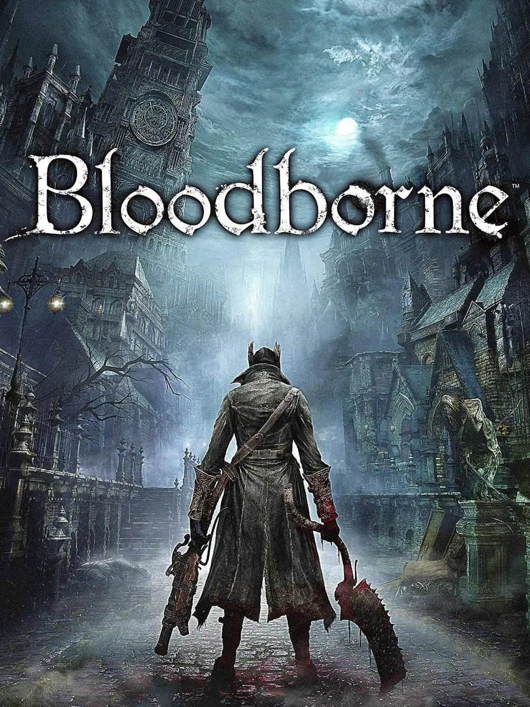
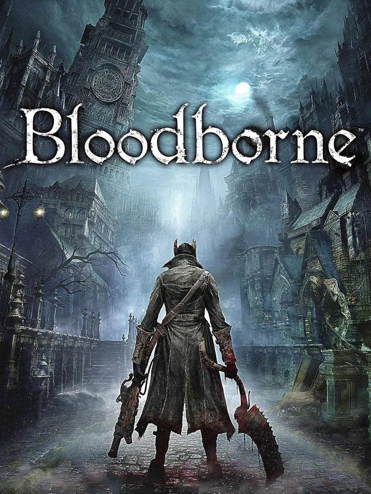
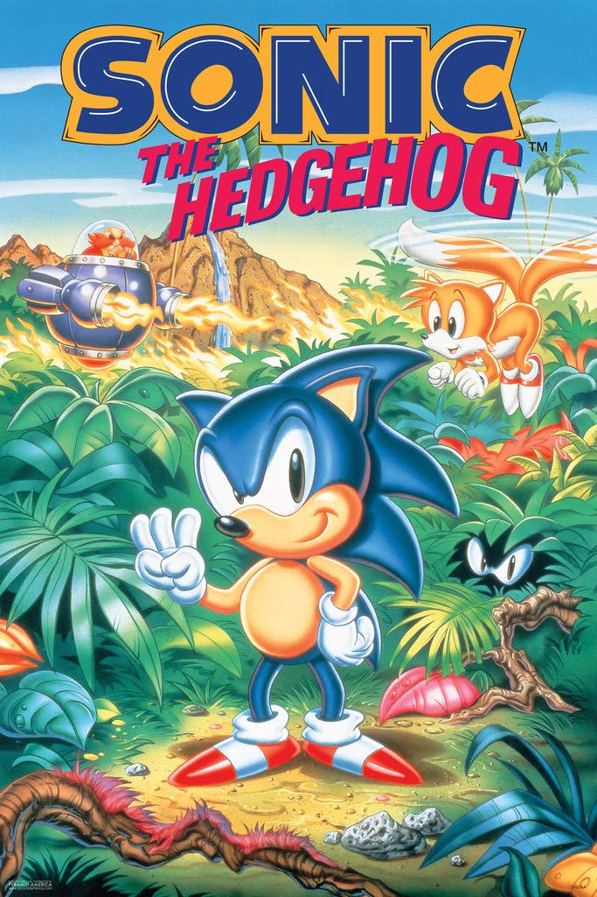
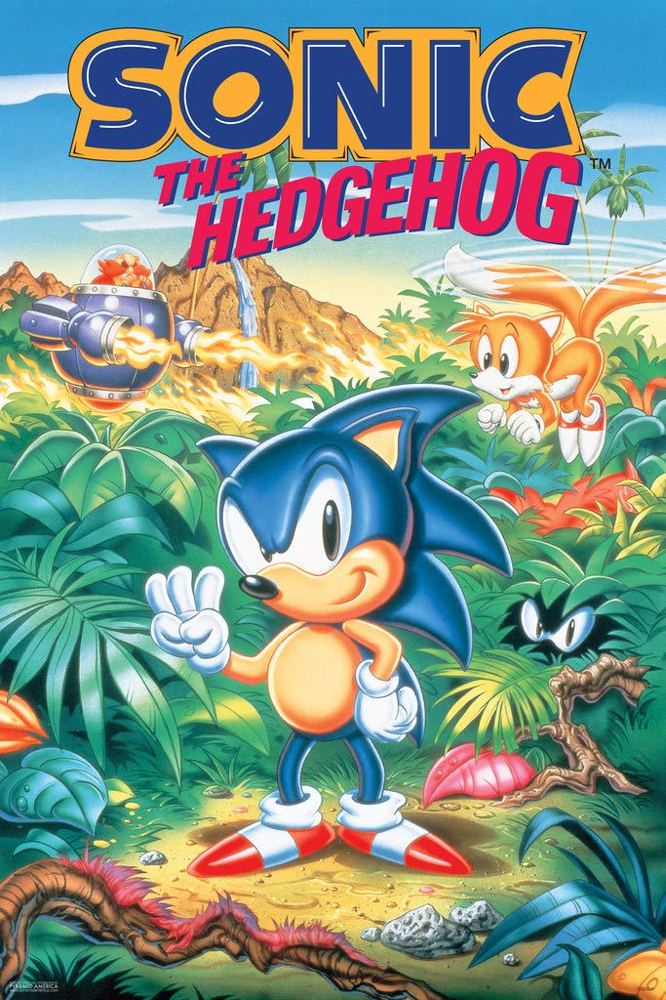
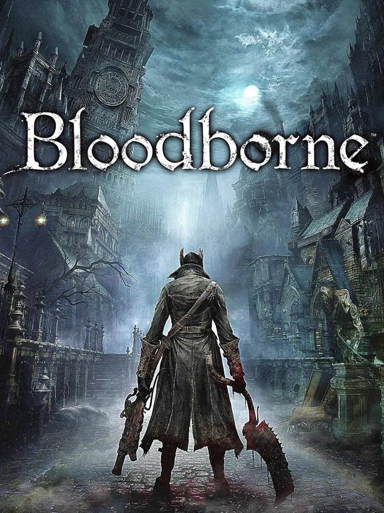
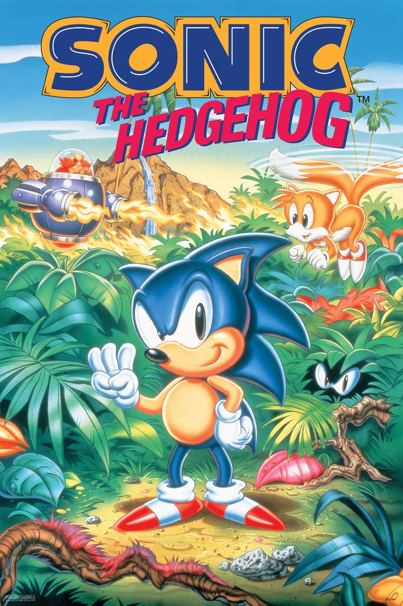

Jogos em Destaque
 



 

Um jogo eletrônico, também chamado videojogo ou pelo anglicismo videogame, é um jogo no qual o jogador interage através de periféricos conectados ao aparelho, como controles (joysticks) e/ou teclado com imagens enviadas a uma televisão ou um monitor, ou seja, aquele que usa tecnologia de computador. O termo inglês video game, ganhou a forma aglutinada no Brasil (como videogame), tanto para se referir a videojogos, como para se referir aos consoles onde os jogos se processam. Os sistemas eletrônicos usados para jogar videojogos são conhecidos como plataformas — como, por exemplo, computadores, arcades, celulares e consoles. O dispositivo de entrada usado para manipular videojogos é chamado controle e varia de acordo com a plataforma. Por exemplo, um controle pode ser constituído por um direcional e um único botão. Outros podem ter dezenas de botões e mais de um direcional. Muitos jogos de computador podem também ser jogados com teclado ou uma combinação do teclado com o rato/mouse simultaneamente ou até mesmo controles específicos. Os videogames também podem usar outras maneiras de interagir e prover informação ao jogador. O uso de sons é usado em larga escala desde os primórdios. Outros tipos de resposta, como dispositivos de vibração e sensores de movimento também são bastante utilizados nos videojogos. O avanço tecnológico tem trazido formas cada vez mais intensas de imersão nos jogos através destes periféricos, como o reconhecimento de movimentos e de voz, surgindo assim os jogos em realidade virtual, fruto do desenvolvimento da tecnologia.
Conheça as plataformas existentes!

